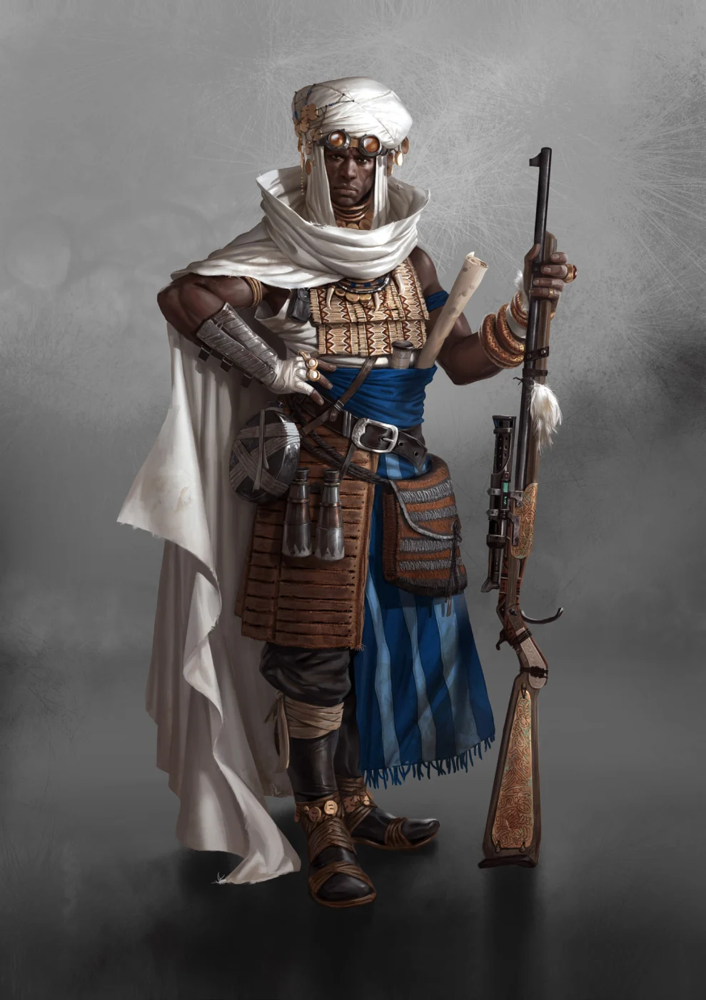

Leaders
- Cartographers
- Great Hunters
- Sheikhs
- Darweshi
- Raiders
- Hamza
- Waziri
- Consuls
- Atuma
- Elani
- Jaafar
- Sarahali
- Zohra
CULT DOSSIER
Conquerors of the World
+1 to maximum skill level

EXPLORATION · DIPLOMACY · TRADE
The Neolibyans see the world as an opportunity waiting to be discovered, negotiated with, and made profitable. Their ships cross the Mediterranean carrying Petro, weapons, spices, luxury goods, machinery, and people. Their caravans penetrate regions other Cults know only from rumor. Their Cartographers turn unknown territory into maps, and their Merchants turn maps into trade routes.
Wealth is celebrated openly. Fine fabrics, elaborate jewelry, enormous entourages, palaces, ships, and Surge Tanks demonstrate success far more convincingly than modest words ever could. A prosperous Neolibyan is expected to look prosperous.
Behind the luxury lies a ruthless principle: almost anything can become valuable if someone has the imagination to create a market for it.
The Cult traces its traditions to the Libyan, an enterprising merchant who emerged decades after the devastation of Africa's northern coast. He supplied survivors, established trading posts, defeated competitors through commerce, and created a network stretching across the recovering Mediterranean.
Tripol grew from one of his enterprises. Goods flowed into its warehouses: grain, cloth, oil, metalwork, tea, tools, and everything else a recovering society required. Some of the profits returned to the population through fields, canals, workshops, and public construction.
The Libyan eventually described the foundation of every successful enterprise as three connected principles: exploration, diplomacy, and trade.
His successors made those principles the heart of their identity. Two centuries after his death, they called themselves Neolibyans.
Exploration comes first. Unknown coastlines, forgotten settlements, artifact grounds, passages through dangerous territory, and distant markets all promise opportunity. A route no one else knows can be worth more than a warehouse full of goods.
Diplomacy makes that route usable. Gifts, negotiation, hospitality, alliances, and careful attention to local interests can accomplish what gunfire cannot. A successful Neolibyan would rather persuade a ruler to welcome a caravan than spend soldiers forcing the gates.
Trade completes the process. Resources are catalogued, demand is identified or created, and the new route becomes part of the commercial network.
Neolibyans believe trade encourages civilization because both sides profit more through cooperation than destruction.
That principle does not prevent them from using destruction when cooperation becomes unprofitable.
Tripol's Bank of Commerce is the center of Neolibyan power. What began as the Libyan's offices has grown into a vast complex of scriptoriums, archives, warehouses, accountants, cartographers, and administrators.
The Bank records routes, profits, contracts, ownership, concessions, and commercial history stretching back generations. Its ledgers allow Neolibyans to understand not merely what something is worth today, but what it produced decades ago and what another merchant may be willing to pay for it tomorrow.
At the beginning of each year, every concession controlled by the Bank returns to it.
Then comes the Great Auction.
Merchants arrive from across Africa and the Mediterranean to compete for trade routes, plantations, markets, mines, settlements, and other commercial rights. Alliances are created in hours, rivals cooperate temporarily, and fortunes are committed for the chance to control a profitable sector for another year.
Winning a concession grants enormous freedom within that market. Losing one means walking away.
Neolibyan hierarchy follows success. Wealth, influence, reputation, contacts, and the visible signs of prosperity determine how seriously someone is taken.
Yet wealth alone does not place anyone above the commercial order.
A merchant who continues exploiting a concession after losing it, violates an agreement, or intrudes upon another Neolibyan's recognized market can be brought before a tribunal. Breaking contracts threatens the entire system upon which Neolibyan wealth depends, so even powerful merchants are expected to respect the result of the Auction.
Success also carries responsibilities beyond business.
A Neolibyan is expected to enrich the village or community from which they came. Baths, workshops, power stations, clean water systems, libraries, schools, and other improvements are paid for by successful merchants. Supporting one's home demonstrates prosperity, strengthens the family, and creates better educated children who may eventually enter Neolibyan service themselves.
Wealth that never returns home brings far less honor.
Neolibyan training begins with literacy and arithmetic. Apprentices work in scriptoriums, learning to copy records, calculate accounts, and understand the machinery of trade. Scribes track shipments and profits while learning how commercial authority functions.
Recognition as a Merchant marks entry into the Cult proper. From that point onward, the Neolibyan can establish an independent enterprise and compete for concessions.
Some become Seafarers, opening routes along rivers and distant coasts. Exceptional explorers become Cartographers whose maps of unknown territories can be worth fortunes.
Others remain within the commercial hierarchy. Magnates control vast enterprises and networks of subordinates. Sheikhs stand at the summit of economic power and guide the Bank of Commerce itself.
Ambassadors specialize in diplomacy, while Waziris represent the interests of powerful Sheikhs and can influence entire sectors of the economy. Consuls administer strategically important settlements where ordinary commercial ownership would be too unstable.
There is no single road upward. Profit may come from discovery, negotiation, administration, investment, or audacity.
Neolibyans are one part of a larger African power structure. Their wealth supports communities, equips expeditions, finances construction, and provides weapons, vehicles, food, Petro, and ammunition to the Scourgers.
At home, this relationship does not necessarily make the merchant socially superior. Scourgers are revered as warriors who sacrifice themselves for Africa, while Neolibyans can be mocked as soft merchants who let others fight for them.
Beyond Africa, the balance changes.
European ports, estates, trade enclaves, and expeditions often depend upon Neolibyan money. Scourgers become guards, soldiers, escorts, and enforcers serving enterprises organized by merchants whose influence extends across the Mediterranean.
The two Cults depend upon each other even while both may resent what the other contributes.
Neolibyan wealth is not built entirely through peaceful trade.
The Cult claims dominance over much of the Mediterranean and protects that dominance with ships, Scourger forces, and agreements that outsiders may regard as little more than organized protection money. Authorized vessels receive recognition and safe passage. Those traveling without approval may be stopped, boarded, or seized.
Resistance can end in bombardment and enslavement.
Raiders push this expansion onto European shores. Their ships carry Scrappers, Scourgers, vehicles, and equipment into ruin fields and unexplored territories. A successful expedition can transform a minor harbor into a commercial center and place previously inaccessible artifacts into African hands.
Plantations, mines, and other Neolibyan enterprises also make extensive use of slaves. Captives taken in war or piracy become another commodity moving through the Cult's economy.
For a Neolibyan, the distinction between conquest and commerce can become disturbingly thin.
Not every Neolibyan finds satisfaction in ledgers.
Great Hunters pursue reputation through danger rather than purely through profit. They travel into foreign wilderness, seek massive beasts and Psychonauts, and invest enormous sums in precision weapons and expeditions.
Their hunts are demonstrations of wealth, courage, skill, and superiority. Stories are exchanged in expensive establishments, trophies become symbols of prestige, and knowledge gained from encounters with Raptures can even earn respect from Spitalians.
Great Hunters embody another aspect of Neolibyan ambition: wealth matters most when it allows someone to experience something beyond the reach of ordinary people.
Neolibyans rarely look at another Cult and see only an enemy. They see suppliers, customers, competitors, guides, guards, specialists, or potential partners.
Anabaptists need resources even when their doctrine makes commerce uncomfortable. Hellvetics control passages worth paying for. Apocalyptics understand markets of another kind. Scrappers are invaluable wherever ruins contain profit. Anubians offer insight and guidance, while Scourgers provide force.
Hostility can therefore coexist with business.
A Neolibyan may despise someone personally and still offer excellent terms if cooperation produces Dinars. Today's enemy can become tomorrow's partner if the balance changes.
The truly dangerous person is not the rival who competes aggressively, but the one who cannot be trusted to honor an agreement.
Neolibyans can point to real accomplishments. Trade routes connect isolated peoples. Their investments build schools, workshops, wells, ports, and entire settlements. Their explorers rediscover the world while their diplomats create connections between societies that might otherwise meet only through violence.
Yet almost every virtue contains its darker reflection.
Exploration can become conquest. Diplomacy can become manipulation. Investment can create dependency. Trade can transform human beings into merchandise. A prosperous settlement may genuinely benefit from Neolibyan wealth while gradually discovering that its roads, resources, and future belong to someone in Tripol.
A Neolibyan is taught that every problem contains an opportunity.
Sooner or later, each must decide whether everything that can be turned into profit should be.
THE COMMERCIAL ASCENT
After recognition as a Merchant, a Neolibyan can pursue exploration, economic power, or diplomacy. Select any rank to read its complete entry.
PROFIT & PRESTIGE
TOOLS OF COMMERCE
Open or close each equipment group to focus the reference.